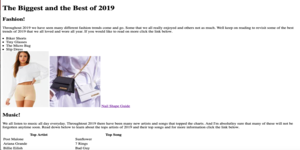
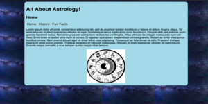
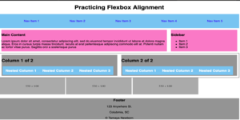

CSCE 242
Client Server Computing
Tamaya Newborn
Assignments
Assignment 1 - Basic HTML
For my first assignment I decided to go into the New Year wiith a final wrap up of 2019. With some of my favorite things being fashion, music, and tv, I thought why not revisit some of those most popular trends of 2019 and see what really had the biggest impact on people throughout the entire year.
Assignment 2 - Basic CSS
I personally find learning about astrology to be very interesting. So, for this weeks assignement I thought it would be interesting to use the new techniques I was learning to add pictures and centering them properly to make a webpage centered all around astrology.
Assignment 3 - Page Layout
This week we learned a lot about flexing and learning new ways to readjust the way things are positioned on the page and make the page look cleaner. To test our abilities we were tasked with replicating a webpage using things like flex, padding, classes and id's to help get the task done.